Some setting
Data
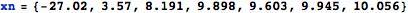
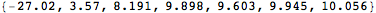
Sample mean
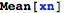
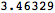
Normalizing constant
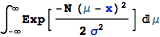
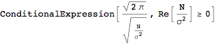
Posterior distribution function w.o. normalizing constant
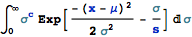
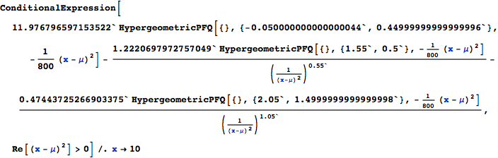
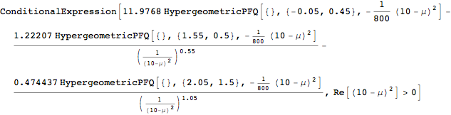
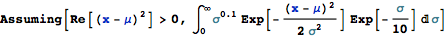
Define function for posterior distribution of one data
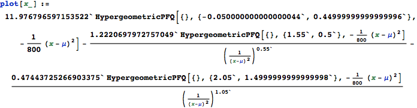
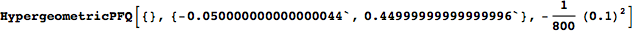

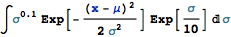
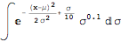
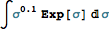
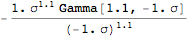
Plot
Parameters
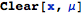
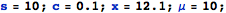
Posterior P(μ|x) for one datum from Xn = -10
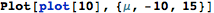
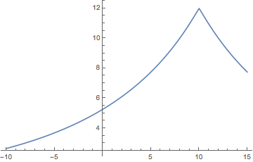
Posterior P(μ|x) for one datum from Xn = -27
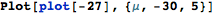

Posterior P(μ|x) for all 7 data
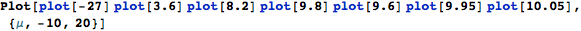
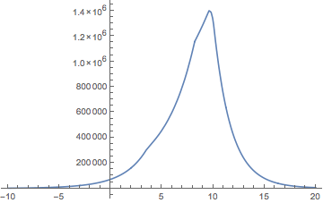
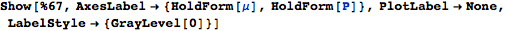
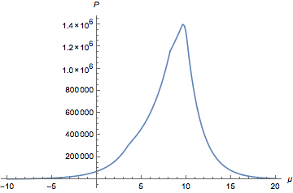
check a small bump around μ=-27
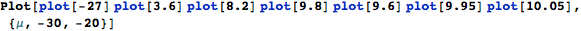
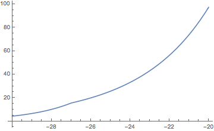

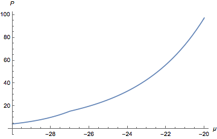